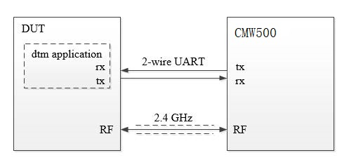
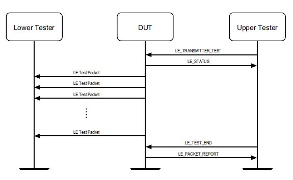
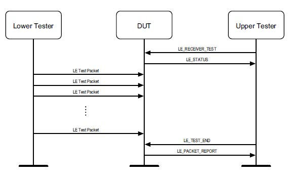

|
HS6621C Programming Guide
Bluetooth Low Energy (BLE) 5.1
|
|
HS6621C Programming Guide
Bluetooth Low Energy (BLE) 5.1
|
Direct Test Mode is used to control the DUT and provides a report back to the Tester. Direct Test Mode shall be set up by one of two alternative methods:
Each DUT shall implement one of the two Direct Test Mode methods in order to test the Low Energy PHY layer. DUT implements the second method, means through a 2-wire UART interface. The test framework of through 2-wire UART interface is shown as follow:

DUT runs DTM application, and test equipment of CMW500 sends DTM commands to DUT. DTM application analyzes those commands and invokes related API to send packets to CMW500 (transmitter test) or receive packets from CMW500 (receiver test). Afterwards DTM application collects test result and sends to CMW500 by DTM events. CMW500 judges and displays results according to the DTM events.
Source code can be seen in SDK\examples\ble_app_hci_ahi. The important communication UART parametter is shown as follow:
Lower tester and upper tester are on behalf of CMW500. Test message sequences are shown as follow:

Upper tester sends command to DUT to order it to transmit test packets to lower tester. DUT reports event to upper tester after transmit procedure is terminated.

Upper tester sends command to DUT to order DUT prepare to receive test packets from lower tester. Lower tester sends test packets to DUT, and DUT reports event to upper tester after receive procedure is terminated.
The CMW500 transmits a test control message over the RS232, USB, or 2-Wire interface instructing the DUT to transmit reference test packets. The CMW500 measures the average power of the received packets over at least 20% to 80% of the duration of the burst.
The carrier drift test performs a frequency drift measurement over the length of the packet received. The carrier frequency offset is measured in the same manner as basic rate initial carrier test, but on the eight preamble bits in the low energy reference packet.
This test measures the modulation characteristics on the DUT output for each of the selected frequency ranges (LOW, MEDIUM and HIGH).
After sending a test control message to the DUT, the CMW500 sends BLE reference packets to the DUT. The number of packets DUT received is counted and this data is then read by the CMW500 over the 2-Wire connection.
The CMW500 sends a random even number of BLE reference packets to the DUT at -30 dBm with a PRBS9 payload. The CRC value for the packets is alternated between a valid and invalid value. The DUT counts the number of received packets, and this value is read by the CMW500 over the 2-Wire interface for frame error rate (FER) calculation. The test is repeated three times at the frequency selected.
After sending a test control message, the CMW500 sends BLE reference packets to the DUT. The number of packets received at the DUT is counted, and this value is then read by the CMW500 over the 2-Wire connection[1].